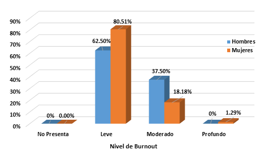
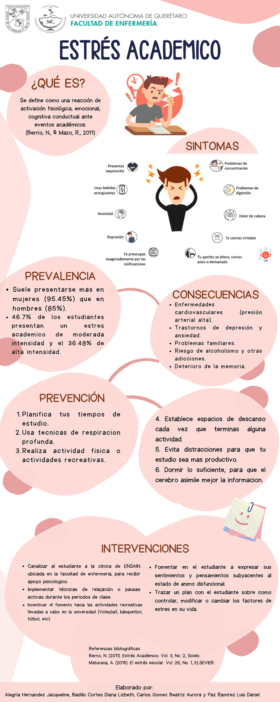

Misión
Compartir información confiable y estrategias prácticas para favorecer el bienestar académico.
Conecta UABC es un proyecto informativo que busca promover la salud emocional, la prevención del estrés académico y la organización de las actividades universitarias.
Conocer el proyectoEs una iniciativa académica dirigida a estudiantes universitarios que proporciona información y herramientas para comprender los efectos del estrés y mejorar los hábitos de estudio.
Su finalidad es impulsar una comunidad estudiantil más informada, organizada y consciente de la importancia de cuidar su bienestar físico y emocional.
Compartir información confiable y estrategias prácticas para favorecer el bienestar académico.
Contribuir a una cultura universitaria que valore tanto el aprendizaje como la salud emocional.
Facilitar el acceso a recursos educativos, técnicas de organización y servicios de orientación.
Las exigencias de la educación superior pueden representar un desafío cuando se combinan con responsabilidades personales, laborales y familiares.
Es una respuesta que puede surgir ante las demandas escolares, especialmente cuando el estudiante percibe que no cuenta con tiempo o recursos suficientes para atenderlas.
La preocupación persistente por exámenes, calificaciones y entregas puede afectar la concentración, el sueño y la vida cotidiana.
El burnout académico se relaciona con agotamiento, distanciamiento respecto a los estudios y una menor percepción de eficacia académica.
¿Por qué es importante? El estrés persistente puede afectar el bienestar, la calidad del descanso, la motivación y el desempeño escolar. Reconocer las señales permite buscar apoyo y realizar cambios oportunos.
La siguiente gráfica presenta una distribución porcentual de niveles de burnout en hombres y mujeres, de acuerdo con el material proporcionado para este proyecto.

Interpretación: En la gráfica predomina el nivel leve de burnout en ambos grupos. El nivel moderado es mayor entre los hombres de la muestra presentada. Los datos no permiten establecer conclusiones generales sobre toda la población estudiantil de la UABC.
Fuente: gráfica proporcionada para el proyecto. Autor, año, tamaño de muestra y metodología no especificados.
Dificultades de atención, concentración y cumplimiento de actividades.
Problemas de sueño, cansancio, tensión muscular y otros síntomas relacionados con el estrés.
Irritabilidad, desmotivación, preocupación frecuente y sensación de agotamiento.
La prevención del estrés requiere hábitos sostenibles y una organización realista de las responsabilidades.
Utilizar una agenda para registrar fechas de entrega, exámenes y compromisos personales.
Identificar las actividades importantes y dividir los trabajos extensos en tareas pequeñas.
Alternar periodos de estudio con pausas breves y mantener horarios regulares de sueño.
Acudir a docentes, tutores, orientadores o profesionales cuando las dificultades afecten el bienestar cotidiano.
El estrés académico puede relacionarse con las exigencias escolares, la organización del tiempo y los hábitos personales. Comprender sus causas y consecuencias ayuda a identificar estrategias de prevención.
Respuesta ante las exigencias y demandas de la vida universitaria.
Equilibrio entre el aprendizaje, la salud emocional y la vida personal.
Elaboración propia con base en información general de la Organización Mundial de la Salud sobre el estrés.
Conoce las principales causas del estrés académico, sus consecuencias y algunas recomendaciones para prevenirlo.

Este video complementa los materiales educativos del proyecto y permite profundizar en la reflexión sobre la vida académica y el bienestar.
Permite programar actividades, exámenes y recordatorios.
Acceder a CalendarFacilita el almacenamiento y la colaboración en documentos.
Acceder a DrivePlataforma para consultar materiales y actividades académicas.
Acceder a BlackboardFacilita reuniones virtuales y trabajos colaborativos.
Acceder a MeetPermite buscar artículos y publicaciones académicas.
Acceder al buscadorConsulta los recursos bibliográficos disponibles en la universidad.
Consultar bibliotecaBuscar orientación es una medida importante cuando las dificultades académicas o emocionales comienzan a afectar la vida cotidiana.
Consulta los servicios de orientación y acompañamiento disponibles en tu campus.
Acude a tu tutor o coordinación para recibir orientación sobre dificultades escolares.
Solicita información sobre hábitos de estudio, adaptación universitaria y recursos de apoyo.
Esta página ofrece información general y no sustituye una evaluación profesional. Si el malestar es persistente o intenso, solicita atención adecuada.